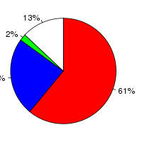
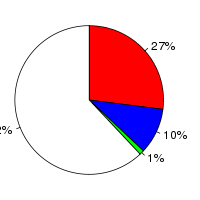

Vitis vinifera (Vitis vinifera, IGGP_12x) and Glycine max (Glycine max, V1.0) were aligned using the LastZ alignment algorithm (LastZ) in Ensembl release 76. Vitis vinifera was used as the reference species. After running LastZ, the raw LastZ alignment blocks are chained according to their location in both genomes. During the final netting process, the best sub-chain is chosen in each region on the reference species.
Full list of pairwise alignments| Gap open penalty (O) | 400 |
| Gap extend penalty (E) | 30 |
| HSP threshold (K) | 3000 |
| Threshold for gapped extension (L) | |
| Threshold for alignments between gapped alignment blocks (H) | |
| Masking count (M) | |
| Seed and Transition value (T) | 1 |
| Additional parameters | |
| Scoring matrix (Q) | Default |
Number of alignment blocks: 210929
| Genome coverage(bp) | Coding exon coverage (bp) | |
|---|---|---|
| Vitis vinifera |
|
 |
| Covered: 82,531,794 out of 486,265,422 | Matches: 20,118,731 out of 32,794,161 | |
| Uncovered: 403,733,628 out of 486,265,422 | Mis-matches: 7,730,511 out of 32,794,161 | |
| Insertions: 606,224 out of 32,794,161 | ||
| Uncovered: 4,338,695 out of 32,794,161 | ||
| Glycine max |
|
 |
| Covered: 49,312,400 out of 973,344,380 | Matches: 17,562,696 out of 64,476,920 | |
| Uncovered: 924,031,980 out of 973,344,380 | Mis-matches: 6,601,325 out of 64,476,920 | |
| Insertions: 492,777 out of 64,476,920 | ||
| Uncovered: 39,820,122 out of 64,476,920 |